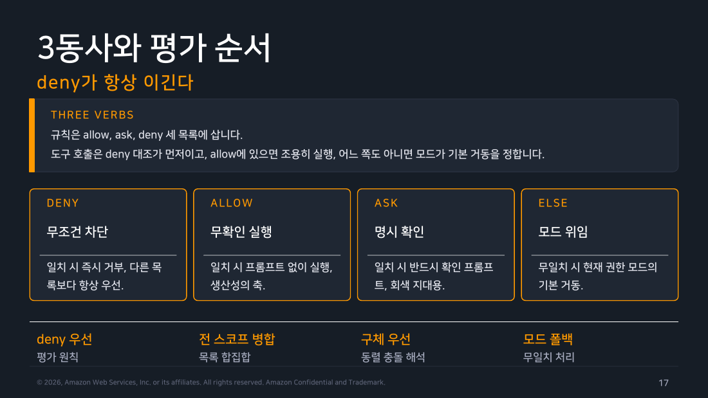
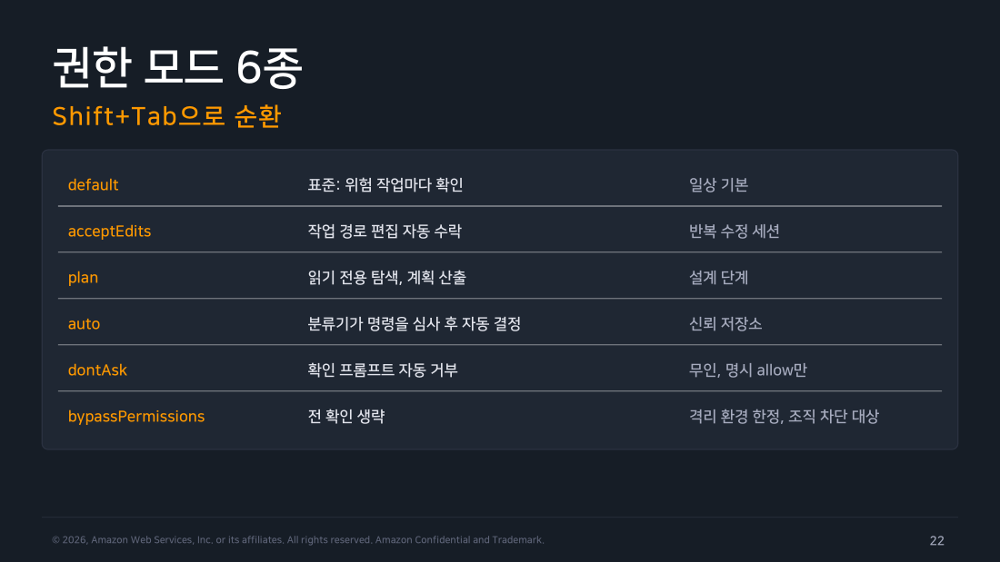
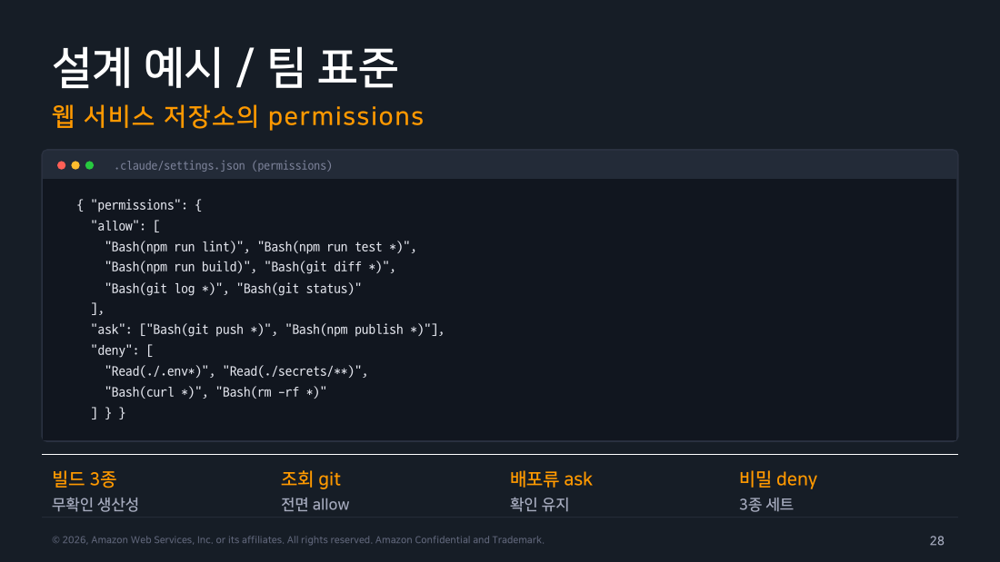

Part 2 — Permissions¶
한 줄 요약¶
권한 규칙은 Tool(specifier)라는 단 하나의 문법을 쓰고 deny·ask·allow 세 목록 중 deny가 항상 먼저 적용됩니다. 어느 목록에도 안 걸리면 그때야 현재 권한 모드(6종 중 하나)가 기본 거동을 정합니다.
왜 알아야 하나¶
1주차에서 권한 모드를 실전 운용 관점으로 다뤘고 그때 이미 "권한 모드가 몇 종인가"라는 질문에 6종이라는 결론을 냈습니다. 이번 파트는 그 결론을 다시 확인하면서 한 단계 더 들어가 모드가 아무것도 정하지 못했을 때(=일치하는 규칙이 없을 때)만 모드가 개입한다는 평가 순서 자체를 다룹니다. 실무에서 "허용 규칙을 분명히 넣었는데 왜 계속 물어보지", "deny를 걸었는데 왜 뚫리지" 같은 문제는 거의 항상 이 평가 순서나 규칙 문법을 잘못 이해한 데서 나옵니다.
1. 3동사와 평가 순서 — deny가 항상 먼저 확인된다¶
Part 1 끝에서 "deny가 무조건 이긴다"고 했었는데, 정확히는 규칙이 3개 목록으로 나뉘어 있고 확인하는 순서가 정해져 있습니다.
- deny부터 봅니다. 걸리면 다른 목록이 뭐라고 하든 즉시 거부되고 끝입니다.
- deny를 통과하면 ask를 봅니다. 걸리면 반드시 확인 프롬프트를 띄웁니다.
- 그것도 아니면 allow를 봅니다. 걸리면 프롬프트 없이 실행됩니다.
- 셋 다 해당 없으면 그제서야 현재 권한 모드의 기본 거동으로 넘어갑니다.
flowchart TD
Q["도구 호출 발생"]
Q --> D{"deny 규칙에<br/>일치하는가?"}
D -->|"예"| DB["<b>즉시 거부</b><br/>다른 목록 무관"]
D -->|"아니오"| A{"ask 규칙에<br/>일치하는가?"}
A -->|"예"| AB["<b>확인 프롬프트</b><br/>더 구체적인 allow가 있어도 프롬프트"]
A -->|"아니오"| AL{"allow 규칙에<br/>일치하는가?"}
AL -->|"예"| ALB["<b>프롬프트 없이 실행</b>"]
AL -->|"아니오"| M["<b>권한 모드의 기본 거동</b><br/>default/acceptEdits/plan/auto/dontAsk/bypassPermissions"]
style Q fill:#673ab7,stroke:#4527a0,stroke-width:3px,color:#fff
style DB fill:#ffebee,stroke:#c62828,color:#000
style AB fill:#fff3e0,stroke:#ef6c00,color:#000
style ALB fill:#e8f5e9,stroke:#388e3c,color:#000
style M fill:#e3f2fd,stroke:#1976d2,color:#000여기서 놓치기 쉬운 규칙 하나. 더 구체적인 규칙이라고 우선순위가 올라가지 않습니다. Bash(aws *)를 deny로 걸어두면 Bash(aws s3 ls)라는 더 좁고 구체적인 allow가 있어도 여전히 거부됩니다. ask와 allow 사이도 마찬가지입니다.

▲ 교재 슬라이드 17 — 3동사와 평가 순서
2. 규칙 문법 — Tool(specifier) 하나로 전부¶
규칙은 딱 한 가지 형식만 씁니다: Tool 단독(그 도구의 모든 호출) 또는 Tool(specifier)(지정자로 범위를 좁힘). 가장 자주 쓰는 두 가지부터 봅니다.
- Bash — 지정자가 명령 패턴입니다.
Bash(npm run lint)처럼 정확히 이 명령만 매칭하거나,Bash(npm run test *)처럼 접두사 뒤에*로 임의 인자를 허용합니다. - Read, Edit — 지정자가 파일 경로 패턴입니다.
.gitignore스타일 글롭을 쓰고,Edit(./secrets/**)처럼 씁니다.
경로 규칙은 도구를 가린다 — Part 1 Lab 1에서 실제로 걸린 함정
위 목록에 Write가 없다는 걸 눈치챘다면 정확합니다. 공식문서는 파일 경로 지정자를 실제로 참조하는 도구가 Read와 Edit 둘뿐이라고 명시합니다. Write(path), NotebookEdit(path), Glob(path), 레거시 MultiEdit(path)처럼 써도 Claude Code는 "규칙을 받아들이기는 하지만 절대 참조하지 않습니다." Part 1의 Lab 1에서 deny: ["Write(secret.txt)"]를 걸었는데 파일이 그대로 만들어진 게 바로 이 문제였고 Edit(secret.txt)로 바꾸자 정확히 차단됐습니다. 새 파일을 만드는 상황이라도 경로 기반 deny/allow는 항상 Edit(...)로 쓰는 게 안전합니다.
나머지 지정자는 필요할 때 참고하면 됩니다.
- Agent — 서브에이전트 타입을 통제합니다(2주차 복습).
Agent(Explore)처럼 특정 타입만 겨냥하거나, 지정자 없이Agent만 쓰면 위임 자체를 통제합니다. mcp__server(__tool)— MCP 도구를 통제합니다.mcp__github은 서버 전체,mcp__github__get_issue는 그 서버의 특정 도구만 겨냥합니다(Part 5·6에서 다룸).
Bash 규칙에는 실전 주의사항이 하나 더 있습니다. 셸 체이닝이나 치환으로 패턴을 우회할 여지가 있기 때문에 권한 규칙은 어디까지나 1차 방어이고 진짜 강한 봉쇄는 3주차에서 다룬 sandbox가 맡습니다.
3. 권한 모드 6종 — 복습¶
3동사 중 아무것도 안 걸리면 그때 현재 권한 모드가 기본 동작을 정합니다. 1주차에서 이미 다룬 대로 6종이고 이 챕터 슬라이드도 정확히 6종을 나열하고 있어 그대로 일치합니다.
default— 위험한 작업마다 확인. CLI에서는 "Manual"로 표시됩니다.acceptEdits— 파일 편집과mkdir/touch/mv/cp/sed같은 일반 파일시스템 명령을 자동 승인.plan— 읽기·탐색용 셸 명령은 실행하지만 소스 편집은 안 함. 계획을 세워 승인받은 뒤에야 실행.auto— 분류기 모델이 행동을 심사해 자동 결정. Pro·Max·Team 플랜에서 터미널이나 VS Code로 대화형 세션을 시작할 때는 기본값이지만-p(헤드리스)나 Agent SDK는 계정·플랜과 무관하게 기본값이default입니다. 이 문서의 실습은 전부-p로 진행했으니 각 Lab에서defaultMode를 명시하지 않은 경우auto가 아니라default에서 출발했다는 뜻입니다.dontAsk— 확인이 필요한 호출을 전부 자동 거부.bypassPermissions— 거의 모든 확인 생략. 격리 환경 전용.

▲ 교재 슬라이드 22 — 권한 모드 6종
Note
교재가 챕터마다 4종(1주차)/6종(이 챕터)/5종(6주차)으로 다르게 말하는데, 공식문서(code.claude.com/docs/en/permission-modes, 2026-08-22 확인)와 이 챕터 슬라이드 모두 6종으로 일치합니다. 1주차는 자주 쓰는 것만 추린 축약 설명이었던 것으로 보입니다.
4. 실무에서 바로 쓰는 두 시나리오¶
시나리오 1 — CI나 무인 자동화: dontAsk 모드를 씁니다. 확인이 필요한 상황이면 무조건 자동으로 거부해버려서 미리 허용해둔 것만 실행됩니다. 물어볼 사람이 없는 환경에 딱 맞습니다. bypassPermissions와 헷갈리기 쉬운데 방향이 정반대입니다 — bypass는 확인을 생략(위험한 방향)하고 dontAsk는 확인이 필요하면 거부(안전한 방향)합니다.
시나리오 2 — 조직이 뭔가를 못 쓰게 막고 싶을 때: managed 설정의 deny를 씁니다. 개발자가 자기 User나 Project 설정에 아무리 넓은 allow를 넣어도 managed의 deny는 못 뚫습니다. Part 1에서 배운 "권한 규칙은 합쳐진다"는 원칙 그대로입니다 — managed의 deny도 다른 모든 규칙과 합쳐지고 deny는 항상 먼저 확인되니 결과적으로 절대 못 뚫습니다. 조직은 여기에 더해 allowManagedPermissionRulesOnly(개인 규칙 자체를 봉쇄), disableBypassPermissionsMode, disableAutoMode 같은 managed 전용 키로 특정 모드 자체를 못 쓰게 강제할 수도 있습니다.
5. auto 모드 커스텀 — 분류기에 힌트 주기¶
auto 모드는 분류기 모델이 "이 행동이 위험한가"를 대신 판단해준다고 했는데, 분류기가 우리 회사 인프라를 모르니까 정상적인 작업도 위험하다고 오판할 수 있습니다. autoMode 설정으로 힌트를 주면 됩니다.
{ "autoMode": {
"environment": ["사내 k8s 스테이징은 접근 가능"],
"allow": ["kubectl get, describe 계열"],
"hard_deny": ["IAM 정책 변경 시도"]
} }
environment에 신뢰하는 인프라를 자연어 문장으로 적고 allow/soft_deny/hard_deny 세 강도로 규칙을 나눠 씁니다. $defaults 마커를 넣으면 내장 기본 규칙을 그 자리에서 상속받고 classifyAllShell: true(v2.1.193 이상)를 켜면 모든 셸 명령을 분류기에 넘길 수 있습니다.
이 설정은 왜 Project 공유 설정에서는 안 통할까
.claude/settings.json은 저장소에 커밋되는 파일이라 다른 사람도 고칠 수 있습니다. 만약 여기서 autoMode가 통했다면, 누군가 이 파일을 슬쩍 고쳐서 "이 위험해 보이는 행동은 사실 안전하니 통과시켜"라고 분류기를 속일 수 있습니다. 그럼 그 프로젝트를 쓰는 팀원 전체의 안전장치가 조용히 느슨해집니다. 그래서 이 설정은 본인만 고칠 수 있는 User 스코프나 조직 관리자만 고칠 수 있는 Managed 스코프에서만 유효합니다.
6. additionalDirectories — 규칙이 아니라 범위 확장¶
permissions.additionalDirectories는 deny·ask·allow와 다른 종류의 키입니다. 규칙을 추가하는 게 아니라 작업 디렉터리 자체의 범위를 넓히는 키로, 여기 적은 경로는 작업 디렉터리처럼 접근 가능해지고 acceptEdits의 자동 승인 범위에도 포함됩니다. CLI에서는 --add-dir ../shared-lib가 같은 효과를 냅니다.
7. /permissions와 설계 예시¶
/permissions를 열면 현재 유효한 규칙 전체를 스코프별로 볼 수 있고 각 규칙이 어느 파일에서 왔는지까지 표시됩니다. 확인 프롬프트에서 "항상 허용"을 고르면 그 규칙은 자동으로 settings.local.json에 기록됩니다. 이렇게 로컬에 쌓인 규칙을 검증한 뒤 Project 공유 설정으로 승격하는 흐름이 팀 표준을 굳히는 정석입니다.
교재가 예시로 든 웹 서비스 저장소의 권한 설계는 실무 감각을 잘 보여줍니다. lint·test·build·git 조회류는 allow로 전면 개방하고 git push나 npm publish처럼 되돌리기 어려운 건 ask로 확인을 남기며 .env·secrets/·curl·rm -rf는 deny로 원천 차단합니다.

▲ 교재 슬라이드 28 — 설계 예시 / 팀 표준
교재가 정리한 흔한 실수도 실무에 바로 옮길 만합니다. Bash(npm run test)처럼 인자 없는 정확 일치만 써두면 인자가 붙는 순간 규칙이 안 먹으니 Bash(npm run test *)처럼 접두 뒤에 별표를 붙여야 합니다. .env만 deny에 넣고 .env.local 같은 변형을 빠뜨리는 실수도 흔합니다(Read(./.env*)처럼 패턴화해야 함). allow를 과하게 넣으면 ask의 존재 의미가 사라지므로 회색 지대에만 ask를 쓰고 명확히 위험한 건 deny로 못 박아야 합니다.
직접 해보기 — Lab 1 후속: permission_denials가 실제로 채워지는 조건¶
Part 1의 Lab 1에서 deny 규칙으로 차단된 두 사례(Write(secret.txt) 무시, Edit(secret2.txt) 차단) 모두 permission_denials 필드가 비어 있었습니다. 이 필드가 정확히 언제 채워지는지 확인하려고 한 가지 시나리오를 더 실행했습니다: default(수동) 모드에서 특정 명령에 ask 규칙을 걸고 헤드리스라 프롬프트를 띄울 수 없는 상황을 만들었습니다.
$ claude -p "rm testdir 명령을 실행해서 폴더를 지워줘." --output-format json
{..., "permission_denials":[
{"tool_name":"Bash","tool_use_id":"toolu_019hJcrCWUW4hj5Y25nrpHas",
"tool_input":{"command":"rmdir testdir","description":"Remove empty testdir directory"}}
], "result":"User가 승인해야 실행됩니다. 승인해 주세요."}
이번에는 permission_denials에 정확히 기록됐습니다.
직접 해보고 알게 된 것 — permission_denials는 차단 주체에 따라 기록 여부가 갈린다
처음엔 "확인이 필요한데 헤드리스라 확인을 못 받은 경우만 기록되는구나"라고 결론 내렸는데, Part 3의 Lab 2에서 PreToolUse 훅이 permissionDecision: "deny" JSON으로 같은 Write 호출을 막아본 결과 이번에는 permission_denials에 정확히 기록됐습니다. 정리하면 settings.json의 permissions.deny 규칙이 막은 정적 차단은 기록되지 않지만 훅이 내린 차단 결정과 모드 기본 거동(프롬프트가 필요한데 헤드리스라 자동 거부)은 기록됩니다. 이 세 가지 차단 경로가 최종 사용자 입장에서는 모두 "거부됐다"로 똑같이 보이지만 검증 로그로는 서로 다른 흔적을 남긴다는 뜻입니다. permission_denials만 보고 "차단이 없었으니 통과했겠지"라고 단정하면 안 되고 정적 deny 규칙을 검증할 때는 반드시 작업 결과 자체(파일이 생겼는지)를 함께 확인해야 합니다.
흔한 오해 바로잡기¶
"더 구체적인 규칙이 이긴다" — 아닙니다. 순서는 항상 deny → ask → allow이고 같은 목록 안에서 구체성은 순서에 영향을 주지 않습니다. 넓은 deny가 좁은 allow보다 항상 먼저 적용됩니다.
"파일 쓰기를 막으려면 Write(경로)를 쓰면 된다" — Claude Code는 Write 도구의 경로 지정자를 참조하지 않습니다. 파일 경로 기반 deny/allow는 Edit(경로)로 써야 합니다.
"헤드리스에서 거부된 건 전부 permission_denials에 남는다" — settings.json의 정적 deny 규칙이 즉시 차단한 건 이 필드에 남지 않습니다. 훅의 deny 결정과 모드가 프롬프트를 띄웠어야 하는데 못 띄워 자동 거부한 경우만 기록됩니다(Part 3 Lab 2에서 재확인).
정리¶
권한 시스템은 Tool(specifier)라는 하나의 문법과 deny → ask → allow라는 고정된 평가 순서 위에서 돌아가고 이 셋 중 아무것도 걸리지 않을 때만 6종 권한 모드 중 현재 모드의 기본 거동이 개입합니다. 무인 자동화는 dontAsk로, 조직 차단은 managed deny로 대응하는 게 실무에서 가장 자주 쓰는 패턴입니다. auto 모드는 분류기와 autoMode 설정으로 세밀하게 조율할 수 있습니다. Lab 1에서 확인했듯 규칙 문법(Write vs Edit)과 검증 방법(permission_denials의 한계)은 문서만 읽어서는 놓치기 쉬운 디테일이라 실측이 값집니다. 다음 파트는 이 권한 판단을 도구 호출 이전·이후 시점에 가로채 커스텀 로직을 끼워 넣는 Hooks를 다룹니다.
출처¶
- Claude Code Deep Dive Workshop — Chapter 4 / Part 2: Permissions (2026.07 판, s17~30)
- 공식 문서: Choose a permission mode (2026-08-22 확인 — 권한 모드 6종·기본 순환 3종), Permissions (규칙 평가 순서,
Edit/Write경로 규칙 차이)